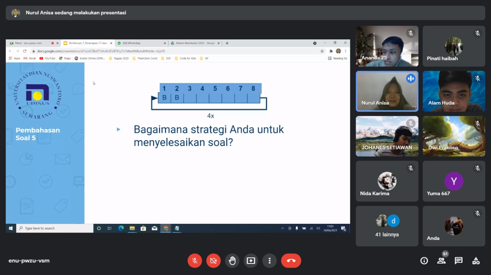

Matrikulasi diartikan sebagai kegiatan pemenuhan kompetensi peserta didik agar kesenjangan antara subtansi dan pengalaman belajar dari kurikulum yang berbeda dapat terpenuhi sesuai kompetensi yang harus dikelola satuan pendidikan secara terencana, terarah, terprogram dan dapat dipertanggungjawabkan.
Tujuan matrikulasi ini sendiri adalah untuk menyetarakan kompetensi dari siswa yang berbeda sekolah terkhusus mahasiswa dari daerah, mengenalkan kampus lebih dalam, mempererat keakraban sesama mahasiswa, dll.
Pengalaman saya ketika mengikuti matrikulasi ini sangat berguna sekali untuk saya karena saya telah diberikan beberapa Materi yang disebutkan diatas tadi yang salah satunya disampaikan oleh dosen pengampu. Sangat senang bisa berteman dengan teman baru saat mengikuti matrikulasi ini.
